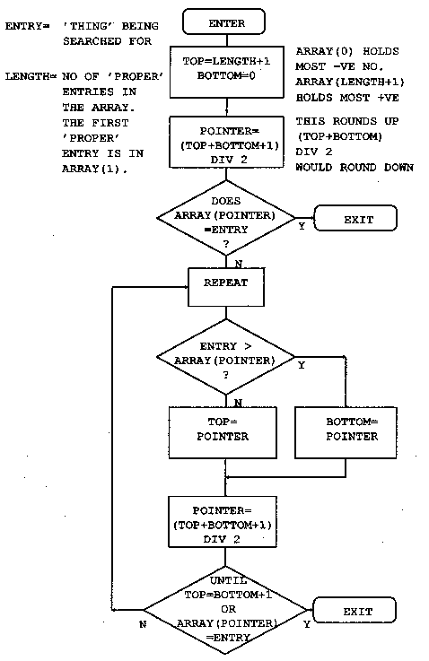

5 bytes
5 bytes
1 to 31 bytes
5 bytes
1 to 31 bytes
5 bytes

NAME.NDX (index file)
| maxrec 5 bytes |
length 5 bytes |
index$(1) 1 to 31 bytes |
index(1) 5 bytes |
index$(2) 1 to 31 bytes |
index(2) 5 bytes |
etc. |
Where index(n) points to a record in the data file as follows:
ADDRESS.DTA (data file)
| Phone Num 1 to 31 bytes |
Address 1 1 to 31 bytes |
Address 2 1 to 31 bytes |
Address 3 1 to 31 bytes |
Address 4 1 to 31 bytes |
Post Code 1 to 31 bytes |
| maxrec | Is the maximum number of records permitted in this file. The practical limit is governed by the amount of memory available for the index arrays which are held in memory. If you want to write a disk access and sort program for the index - the best of luck. And please can I have a copy? |
| length | Is the number of entries in the index. |
| index(n) | Is the value of PTR#datanum just prior to the first byte of the data for this entry being written to it. In the Random File examples this value was calculated and it increased by a constant amount for every record. |
10 REM F-INDEX
20 REM EXAMPLE OF AN INDEXED FILE
30 :
40 REM Written by Doug Mounter - Feb 1982
50 REM Modified for BBCBASIC(86) - Dec 1985
60 :
70 REM This is a simple address book filing
80 REM system. It will accept names, telephone
90 REM numbers and addresses and store them in a
100 REM file called ADDRESS.DTA. The index is in
110 REM name order and is kept in a file called
120 REM NAME.NDX. All the fields are character
122 REM and the maximum length of any field
124 REM is 30.
130 :
140 PROC_initialise
150 PROC_open_files
160 ON ERROR IF ERR<>17 PRINT:REPORT:PRINT" At line ";ERL:END
170 REPEAT
180 CLS
190 PRINT TAB(5,3);"If you want to:-" '
200 PRINT TAB(10);"End This Session";TAB(55);"Type 0"
210 PRINT TAB(10);"Enter Data";TAB(55);"Type 1"
220 PRINT TAB(10);"Search For/Delete an Entry";TAB(55);"Type 2"
230 PRINT TAB(10);"List in Alphabetical Order";TAB(55);"Type 3"
240 PRINT TAB(10);"Reorg data File and Index";TAB(55);"Type 4";
250 REPEAT
260 PRINT TAB(5,11);
270 PRINT "Please enter the appropriate number (0 to 4) ";
280 function$=GET$
290 PRINT return$;:PROC_cteol
300 UNTIL function$>"/" AND function$<"5"
310 function=VAL(function$)
320 PRINT TAB(54,function+5);"<====<<";
330 ON function PROC_enter,PROC_search,PROC_list,PROC_reorg,ELSE
340 UNTIL function=0
350 CLS
360 PROC_close_files
370 *ESC ON
380 PRINT "Address Book Files Closed"''
390 END
400 :
410 :
420 REM ENTER DATA
430 :
440 DEF PROC_enter
450 flag=TRUE
460 temp$=""
470 i=1
480 REPEAT
490 REPEAT
500 IF temp$="N" PROC_message("Data NOT Accepted")
510 PROC_get_data
520 IF length=maxrec OR data$(1)="" flag=FALSE:GOTO 590
530 IF data$(1)="+" OR data$(1)="-" PROC_message("Bad Data"):GOTO 590
540 i=FN_find_place(0,data$(1))
550 IF i>0 PROC_message("Duplicate Record")
560 PRINT '"Is this data correct ? ";
570 temp$=FN_yesno
580 :
590 UNTIL NOT flag OR temp$<>"N"
600 PROC_cteos
610 IF NOT flag THEN 670
620 PROC_put_index(i,data$(1),PTR#datanum)
630 FOR i=2 TO 7
640 PRINT#datanum,data$(i)
650 NEXT
660 :
670 UNTIL NOT flag
680 ENDPROC
690 :
700 :
710 REM SEARCH FOR AN ENTRY
720 :
730 DEF PROC_search
740 i=0
750 REPEAT
760 PRINT TAB(0,11);:PROC_cteol
770 INPUT "What name do you want to look for ",name$
780 IF name$="" THEN 800
790 IF name$<>""IF name$="DELETE" PROC_delete(i) ELSE i=FN_display(i,name$)
800 UNTIL name$=""
810 ENDPROC
820 :
830 :
840 REM LIST IN ALPHABETICAL ORDER
850 :
860 DEF PROC_list
870 entry=1
880 REPEAT
890 CLS
900 line_count=0
910 REPEAT
920 PRINT TAB(0,line_count);
930 PROC_read_data(entry)
940 PROC_print_data
950 entry=entry+1
960 line_count=line_count+8
970 temp$=INKEY$(0)
980 UNTIL entry>length OR line_count>16 OR temp$<>""
990 PROC_message("Push any key to continue or E to end ")
1000 UNTIL entry>length OR GET$="E"
1010 ENDPROC
1020 :
1030 :
1040 REM REORGANISE THE DATA FILE AND INDEX
1050 :
1060 DEF PROC_reorg
1070 entry=1
1080 PRINT TAB(0,13);"Reorganising the Data File" '
1090 newdata=OPENOUT"ADDRESS.BAK"
1100 REPEAT
1110 PROC_read_data(entry)
1120 index(entry)=PTR#newdata
1130 FOR i=2 TO 7
1140 PRINT#newdata,data$(i)
1150 NEXT
1160 entry=entry+1
1170 UNTIL entry>length
1180 CLOSE#newdata
The time taken to rename a file can be considerable.
1190 PRINT "Re-naming the Data File" ' 1200 *REN ADDRESS.$$$=ADDRESS.BAK 1210 PRINT "*"; 1220 *REN ADDRESS.BAK=ADDRESS.DTA 1230 PRINT "*"; 1240 *REN ADDRESS.DTA=ADDRESS.$$$ 1250 PRINT "*"; 1260 datanum=OPENUP "ADDRESS.DTA" 1270 ENDPROC 1280 : 1290 : 1300 REM INITIALISE VARIABLES AND ARRAYS 1310 : 1320 DEF PROC_initialise 1330 MODE 7 1340 *ESC OFF 1350 esc$=CHR$(27) 1360 bell$=CHR$(7) 1370 return$=CHR$(13) 1380 maxrec=100 1390 : 1400 REM The maximum record number, maxrec, is 1402 REM read in 1410 REM PROC_read_index if the file already exists. 1420 : 1430 DIM message$(7) 1440 FOR i=1 TO 7 1450 READ message$(i) 1460 NEXT 1470 DATA Name,Phone Number,Address,-- " --,-- "--,-- " --,Post Code 1480 : 1490 DIM data$(7) 1500 FOR i=1 TO 7 1510 data$(i)=STRING$(30," ") 1520 NEXT 1530 temp$=STRING$(255," ") 1540 temp$="" 1550 : 1560 DIM code 3 1570 PROC_assemble 1580 ENDPROC 1590 : 1600 : 1610 REM OPEN THE FILES 1620 : 1630 DEF PROC_open_files 1640 indexnum=OPENUP"NAME.NDX" 1650 datanum=OPENUP"ADDRESS.DTA" 1660 IF indexnum=0 OR datanum=0 PROC_setup ELSE PROC_read_index 1670 PTR#datanum=EXT#datanum 1680 ENDPROC 1690 : 1700 : 1710 REM SET UP NEW INDEX AND DATA FILES 1720 : 1730 DEF PROC_setup 1740 CLS 1750 PRINT TAB(0,13);"Setting Up Address Book" 1760 indexnum=OPENOUT"NAME.NDX" 1770 datanum=OPENOUT"ADDRESS.DTA" 1780 length=0 1790 PRINT#indexnum,maxrec,length 1800 CLOSE#indexnum 1810 DIM index$(maxrec+1),index(maxrec+1) 1820 index$(0)="" 1830 index(0)=0 1840 index$(1)=CHR$(&FF) 1850 index(1)=0 1860 ENDPROC 1870 : 1880 : 1890 REM READ INDEX AND LENGTH OF DATA FILE 1900 : 1910 DEF PROC_read_index 1920 CLS 1930 INPUT#indexnum,maxrec,length 1940 DIM index$(maxrec+1), index(maxrec+1) 1950 index$(0)="" 1960 index(0)=0 1970 FOR i=1 TO length 1980 INPUT#indexnum,index$(i),index(i) 1990 NEXT 2000 CLOSE#indexnum 2010 index$(length+1)=CHR$(&FF) 2020 index(length+1)=0 2030 ENDPROC 2040 : 2050 : 2060 REM WRITE INDEX AND CLOSE FILES 2070 : 2080 DEF PROC_close_files 2090 indexnum=OPENOUT"NAME.NDX" 2100 PRINT#indexnum,maxrec,length 2110 FOR i=1 TO length 2120 PRINT#indexnum,index$(i),index(i) 2130 NEXT 2140 CLOSE#0 2150 ENDPROC 2160 : 2170 : 2180 REM WRITE A MESSAGE AT LINE 23 2190 : 2200 DEF PROC_message(line$) 2210 LOCAL x,y 2220 x=POS 2230 y=VPOS 2240 PRINT TAB(0,23);:PROC_cteol:PRINT bell$;line$; 2250 PRINT TAB(x,y); 2260 ENDPROC 2270 : 2280 : 2290 REM GET A Y/N ANSWER 2300 : 2310 DEF FN_yesno 2320 LOCAL temp$ 2330 temp$=GET$ 2340 IF temp$="y" OR temp$="Y" ="Y" 2350 IF temp$="n" OR temp$="N" ="N" 2360 ="" 2370 : 2380 : 2390 REM CLEAR 9 LINES FROM PRESENT POSITIONThis procedure makes use of the machine code routine at the end of the program. It works in a similar fashion to the clear-to-end-of-line and clear-to-end-of-screen procedures defined towards the end of the program.
2400 :
2410 DEF PROC_clear9
2420 LOCAL x,y,i
2430 PRINT return$;
2440 A%=&A20:B%=0:C%=720:D%=0
2450 CALL int10
2460 ENDPROC
2470 :
2480 :
2490 REM GET INPUT DATA - LIMIT TO 30 CHAR
2500 :
2510 DEF PROC_get_data
2520 LOCAL i
2530 PRINT TAB(0,13);
2540 PROC_clear9
2550 IF length=maxrec PROC_message("Add Book Full")
2560 FOR i=1 TO 7
2570 PRINT TAB(10);message$(i);TAB(25);
2580 INPUT temp$
2590 data$(i)=LEFT$(temp$,30)
2600 IF data$(1)="" i=7
2610 NEXT
2620 ENDPROC
2630 :
2640 :
2650 REM FIND AND DISPLAY THE REQUESTED DATA
2660 :
2670 DEF FN_display(i,name$)
2680 PRINT TAB(0,12);:PROC_cteos
2690 i=FN_find_place(i,name$)
2700 IF i<0 PROC_message("Name Not Known - Next Highest Given")
2710 PROC_read_data(i)
2720 PRINT
2730 PROC_print_data
2740 =i
2750 :
2760 :
2770 REM DELETE THE ENTRY FROM THE INDEX
2780 :
Move everything below the entry you want deleted up one
and subtract 1 from the length
2790 DEF PROC_delete(i) 2800 INPUT "Are you SURE ",temp$ 2810 PRINT TAB(0,VPOS-1);:PROC_cteos 2820 IF temp$<>"YES" ENDPROC 2830 IF i<0 i=-i 2840 FOR i=i TO length 2850 index$(i)=index$(i+1) 2860 index(i)=index(i+1) 2870 NEXT 2880 length=length-1 2890 ENDPROC 2900 : 2910 : 2920 REM READ DATA FOR ENTRY iGet the start of the position of the start of the data record for entry 'i' in the index and read it into the buffer array data$(). Save the current value of the data file pointer on entry and restore it before leaving.
2930 : 2940 DEF PROC_read_data(i) 2950 PTRdata=PTR#datanum 2960 IF i<0 i=-i 2970 PTR#datanum=index(i) 2980 data$(1)=index$(i) 2990 FOR i=2 TO 7 3000 INPUT#datanum,data$(i) 3010 NEXT 3020 PTR#datanum=PTRdata 3030 ENDPROC 3040 : 3050 : 3060 REM PRINT data$() ON VDU 3070 : 3080 DEF PROC_print_data 3090 LOCAL i 3100 FOR i=1 TO 7 3110 IF data$(i)<>"" PRINT TAB(10);message$(i);TAB(25);data$(i) 3120 IF data$(1)=CHR$(&FF) i=7 3130 NEXT 3140 ENDPROC 3150 : 3160 : 3170 REM PUT A NEW ENTRY IN INDEX AT POSITION iMove all the directory entries from position i onwards down the index. (In fact you have to start at the end and work back.) Slot the new entry in in the gap made at position i and add 1 to the length.
3180 : 3190 DEF PROC_put_index(i,entry$,ptr) 3200 LOCAL j 3210 IF i<0 i=-i 3220 FOR j=length+1 TO i STEP -1 3230 index$(j+1)=index$(j) 3240 index(j+1)=index(j) 3250 NEXT 3260 index$(i)=entry$ 3270 index(i)=ptr 3280 length=length+1 3290 ENDPROC 3300 : 3310 : 3320 REM FIND ENTRY IN INDEX OR PLACE TO PUT ITThis function looks in the index for the string entry$. If it finds it it returns with i set to its position in the index. If not, i is set to minus the position of the next highest string. (In other words, the position you wish to put the a new entry.) Thus if a part of the index looked like:
and you entered with FRED, it would return 35. However if you entered with GEORGE, it would return -36.
(34) BERT (35) FRED (36) JOHN
The function consists of two parts. The first looks at the entry$ to see if it should just up or down the entry number by 1, taking account of wrap-around at the start and end of the index. The second part is the binary chop advertised with such telling wit in the introduction to indexed files. Since we enter this function with the entry pointer i set to its previous value, we must cater for a negative value.
3330 : 3340 DEF FN_find_place(i,entry$) 3350 LOCAL top,bottom 3360 IF i<0 i=-i 3370 IF entry$="+" AND i<length =i+1 3380 IF entry$="+" AND i=length =1 3390 IF entry$="-" AND i>1 =i-1 3400 IF entry$="-" AND i<2 =lengthHere, at last, T H E B I N A R Y C H O P
3410 top=length+1 3420 bottom=0 3430 i=(top+1) DIV 2 3440 IF entry$<>index$(i) i=FN_search(entry$) 3450 REPEAT 3460 IF entry$=index$(i-1) i=i-1This bit moves the pointer up the index to the first of any duplicate entries.
3470 UNTIL entry$<>index$(i-1) 3480 IF entry$=index$(i) =i ELSE =-i 3490 : 3500 : 3510 REM DO THE SEARCHING FOR FN_find_place 3520 : 3530 DEF FN_search(entry$) 3540 REPEAT 3550 IF entry$>index$(i) bottom=i ELSE top=i 3560 i=(top+bottom+1) DIV 2: REM round 3570 UNTIL entry$=index$(i) OR top=bottom+1 3580 =i 3590 : 3600 :The two following procedures rely on mode 3 or 7 being selected. They will not work properly if a graphics mode has been selected or if some characters on the screen have attributes set.
3610 REM There are no 'native' clear to end of 3620 REM line/screen vdu procedures. The 3630 REM following two procedures clear to the end 3640 REM of the line/screen using interrupt 10. 3650 DEF PROC_cteol 3660 LOCAL x 3670 x=POS 3680 A%=&A20:B%=0:C%=80-x:D%=0 3690 CALL int10 3700 ENDPROC 3710 : 3720 : 3730 DEF PROC_cteos 3740 LOCAL I,x,y 3750 x=POS:y=VPOS 3760 A%=&A20:B%=0:C%=80-x+(24-y)*80:D%=0 3770 CALL int10 3780 ENDPROC 3790 : 3800 : 3810 DEF PROC_assemble 3820 P%=code 3830 [OPT 2 3832 ;no forward references - only 1 pass needed 3840 .int10 INT &10 3850 RETF:] 3860 ENDPROCWell, that's it. Apart from the following notes on the binary chop you have read it all.
Let's try searching the list of numbers below for the number 14.
bottom> (1) 3 Set bottom to the lowest position in the list, and top to the highest. Set the pointer to (top+bottom)/2. Is that entry 14? No it's more, so set top to the current value of pointer and repeat the process. (2) 6 (3) 8 (4) 14 pointer> (5) 19 (6) 23 (7) 34 (8) 45 top> (9) 61
bottom> (1) 3 Set the pointer to (top+bottom)/2. Is that entry 14? No it's less, so set bottom to the current value of pointer and try again. (2) 6 pointer> (3) 8 (4) 14 top> (5) 19 (6) 23 (7) 34 (8) 45 (9) 61
As you can imagine, things are not always as simple as this carefully chosen example. You have to cater for the number not being there, and for the list being empty. There are a number of ways of doing this, but the easiest is to add two numbers of your choice to the list. Make the first entry the most negative number the computer can hold, and the last entry the most positive. This will prevent you ever trying to search outside the list. Preventing a perpetual loop when the number you want is not in the list is quite simple, just exit when 'top' is equal to 'bottom'+1. If you have not found the number by then, it's not in the list.
(1) 3 Set the pointer to (top+bottom)/2. Is that entry 14? Yes, so exit with the pointer set to the position in the list of the number you are looking for. (2) 6 bottom> (3) 8 pointer> (4) 14 top> (5) 19 (6) 23 (7) 34 (8) 45 (9) 61
You can use this routine to add numbers to the list in order. If you can't find the number, you exit with the position it should go in the list. Just move all the numbers under it down one slot and put the new number in. This works just as well when the list is empty except for your two 'end markers'.
Have a look at the flow chart below and work through a couple of dry runs with a short list of numbers. You may think that it's not worth doing it this way and that a 'linear search' would be as quick. Try it with a list of 100 numbers. It should take you no more than 7 goes to find the number. The AVERAGE number of comparisons required for a linear search would be 50.

|
CONTINUE
|